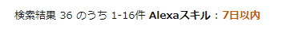
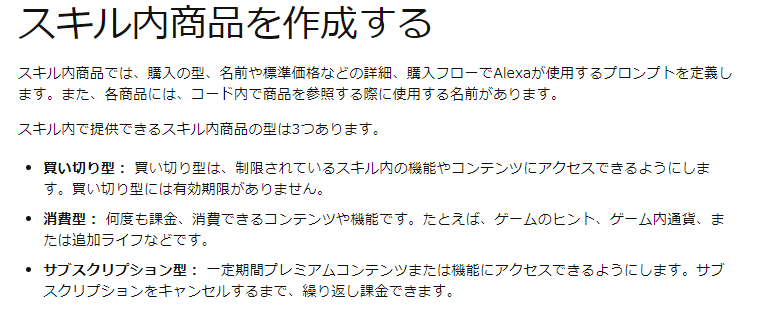
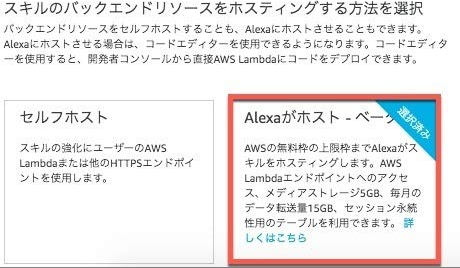

自己紹介
お名前：寺原 歩
お所属：技術戦略推進部
得意言語：ECMAScript
GitHub：a-terarara
今回の資料：https://a-terarara.github.io/lightning-talks_alexa
今日話すこと
1. 今更Alexa？
2. Alexaの始め方
3. Alexa Structure
先日のモブプロ会の一幕
「Alexaはskillとbackendからなるよ」
「skillには呼び出しとIntentがあってさ～」
「へ～知らんかったわぁ」
先日のモブプロ会の顛末
「もっとAlexaで開発してみたい！」
Alexaを始めとしたVoice User Interface（会話型AI）は2018年8月に成長期、今年は・・・？
出典：ガートナー・ジャパン
https://www.gartner.com/jp/newsroom/press-releases/pr-20180822
2019/7/22週の日本におけるAlexaSkillリリース数

多い？少ない？
スキル内課金始めました

Alexa「スキル内課金の概要」より
https://developer.amazon.com/ja/docs/in-skill-purchase/isp-overview.html
AlexaSkillにはまだチャンスが転がっている？
突然クイズ
Alexaってどーれだ？

実はこの子たちAlexaじゃなくてAmazon Echoなんです。

開発に必要なもの
・メールアドレス（またはAmazonアカウント）
以上
AWSアカウントも不要です

30日間無料枠を勝手に用意してくれます
全体

Backendが会話を受け取って処理を行う
Skill
Alexa Skill１つにつき１つの呼び出し名を持っています。
例１：「Alexa、天気を教えて」
例２：「Alexa、ピカチュウを呼んで」
ウェイクワード「Alexa」、呼び出し名「天気」
呼び出し名によって呼び出すSkillを切り替えています
Skill
Skill内の会話にはセッションを持ちます
「Alexa、コーヒーショップを開いて」
「何をご注文なさいますか」
「アイスコーヒーください」
「ご注文ありがとうございます」
呼び出し～会話の終わりまでAlexaSkillは待ち受けています
Skill
Skillは複数のインテント＝会話パターンを持ちます
例１：「アイスコーヒーください」
例２：「ストローもつけてください」
例３：「３杯お願いします」
あらかじめ会話パターンは定義しておきます
つまりユーザの会話を予測しておかなければなりません
インテント
インテントにはフレーズスロット＝可変長の引数を定義できます
例１：「アイスコーヒーください」
例２：「紅茶ください」
フレーズスロット「アイスコーヒー」、「紅茶」
ユーザが自由に発話出来る引数を定義しておき、Backendの処理内容を変えられます
SearchQuery
フレーズスロットは飲み物の種類等Amazon側で予め用意された単語を拾います
自由な単語を拾うためにはSearchQueryを使います
ただし、Alexa側で良い感じな変換処理をかけてくれないので、予想したフレーズと実際の発話フレーズが異なることがあります
例：「コーヒー」⇒「こおひい」
アカウントリンク
https://developer.amazon.com/ja/docs/account-linking/understand-account-linking.html
ユーザ情報取得API
https://developer.amazon.com/ja/docs/custom-skills/request-customer-contact-information-for-use-in-your-skill.html
Skill Connections
https://developer.amazon.com/ja/blogs/alexa/post/fd80044d-af9e-4b10-be68-abc8aa06b86e/skill-connections-now-skills-can-work-together-to-help-customers-get-more-done-developer-preview-jp
声帯の変更
https://developer.amazon.com/ja/docs/custom-skills/speech-synthesis-markup-language-ssml-reference.html#audio
Backend
BackendはAWS Lambda・・・と思いきや下記の要件を満たせればなんでも良いです。
・Rest API
・I/FはJSON
・SSL通信
つまり言語もサーバも自由に選べます
Moneyless Architecture
画像
AlexaでHappyなEngineerLifeを。